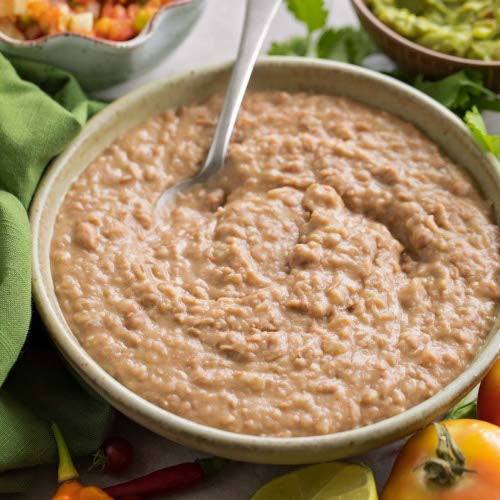

Refried beans

A simple bean dish that will last well in the fridge and wont taste any worse after its been there for a few days.
Goes will in Tacos, Burritoes, Lettuce wraps or my favourite way, just served with plain corn chips and sprouts.
Ingredients
- 1x can of refried beans
- 1x Onion
- 2-5 Cloves of Garlic
- 1 (or more) Chillis
- 1-2 TBSPs worths of spices. "Taco seasoning" works well,
as does Garam Masala or a cobination of cumin/chilli/coriander powder.
- Optional: 1 cup of stock
Steps
- Add oil to pan and saute the Onions.
- Add the garlic and chilli, season with salt.
- Add the spices and stir for atleast a few minutes.
For best results you want the spices fully incororated and have the mixtures start to release oil.
- Add can of refried beans and stock, cook for atleast 15mins
Notes
Garnish with coriander/cheese/lime juice if you wish.
Eat with corn chips, tortillas, lettuce or rice.
Credit to who?
Home